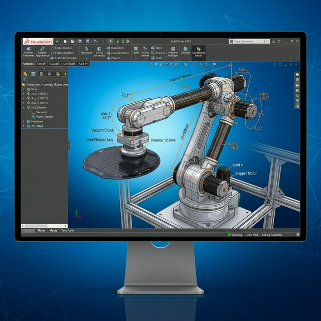
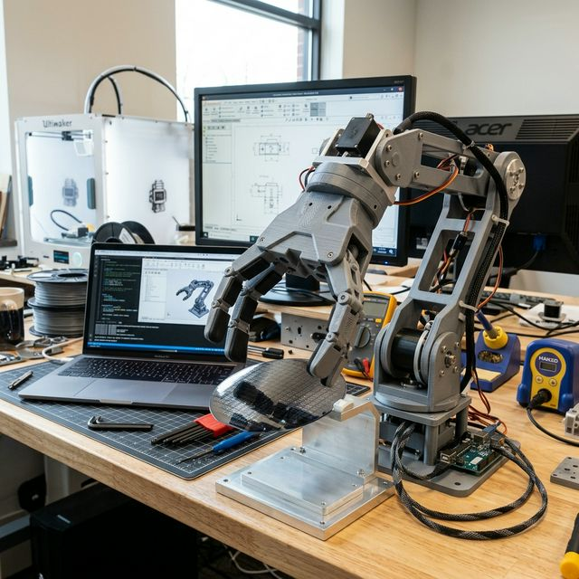
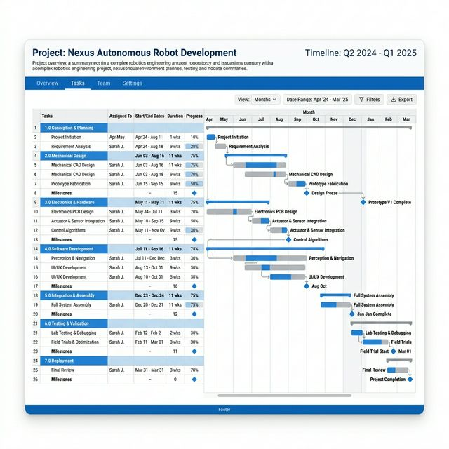

About Me
역량 성장 타임라인
로봇공학 전문성 확보
기초 전공 지식 습득 및 군 복무를 통한 정량적 책임감 검증
조직 적응력 구축
동양미래대학교 반도체부트캠프 이수 (PLC 및 장비 S/W 실무 마이크로디그리)
사용자 중심 소통 최적화
아웃백 아르바이트 및 다양한 프로젝트를 통한 커뮤니케이션 역량 확보
전뇌적 엔지니어 사분면 역량
Job Linkage
대학 정규 및 부트캠프 교과목이 반도체 설비 유지보수 현장에 적용되는 과정
회로이론 & 제어공학
반도체 장비 내부의 전기적 신호 흐름을 분석하여, 돌발 정지(Down) 발생 시 신속한 원인 파악 및 조치에 활용합니다.
PLC 실무 (Bootcamp)
LS산전/미쓰비시 PLC를 다룬 경험으로 설비의 시퀀스 제어를 이해하고 센서/구동부의 I/O 에러를 정확히 디버깅합니다.
CAD (SolidWorks)
기계 구조의 이해도를 높여, 부품 마모나 기구적 결함으로 인해 발생하는 수율 저하 문제를 입체적으로 파악합니다.
2025 동양로봇대회: 웨이퍼 이송 로봇
문제 정의
KIPRIS 특허 조사 및 기존 웨이퍼 핸들링 로봇의 진동으로 인한 파티클 발생/비효율 원인 분석
개념 설계
TRIZ (40가지 원리) 및 SCAMPER 기법 적용하여 그립부 충격 완화 메커니즘 창안
상세 설계
SolidWorks 3D 모델링 및 PSpice 기반의 센서부 회로 시뮬레이션 검증

시제품 제작 & 일정관리
3D 프린팅을 통한 시제품 제작 및 간트 차트 기반의 철저한 공정 기한 준수


결과 및 PMI 평가
PMI (Plus, Minus, Interesting) 분석을 통해 이송 안정성 15% 개선 효과 및 추후 보완점 도출
AI-Future Tech & Tech Stack
미래 융합 기술 역량
Python 기반 데이터 분석
설비 센서 데이터를 활용한 고장 예측 시뮬레이션(Predictive Maintenance) 역량을 통해 4차 산업혁명 스마트 팩토리에 기여합니다.
버전 관리 및 배포
GitHub Pages와 Notion을 활용한 문서화 및 협업, 동료 피드백의 적극적 수용.
Q&A Board
자유롭게 질문이나 피드백, 요청사항을 남겨주세요.